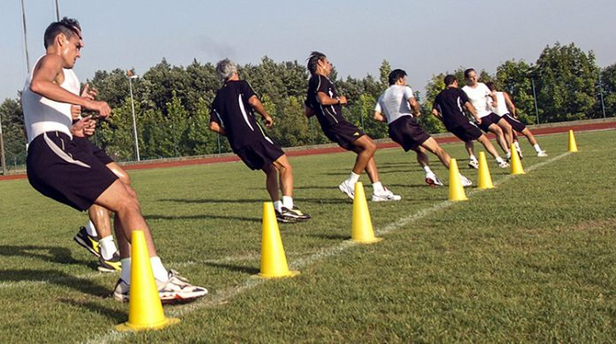
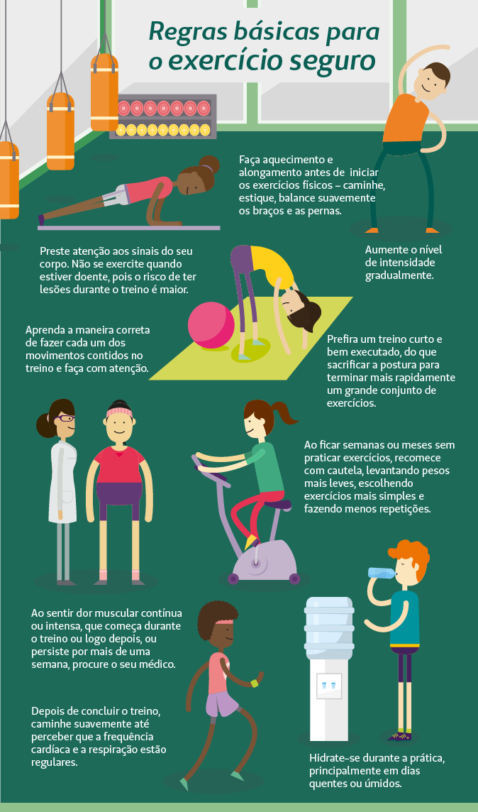
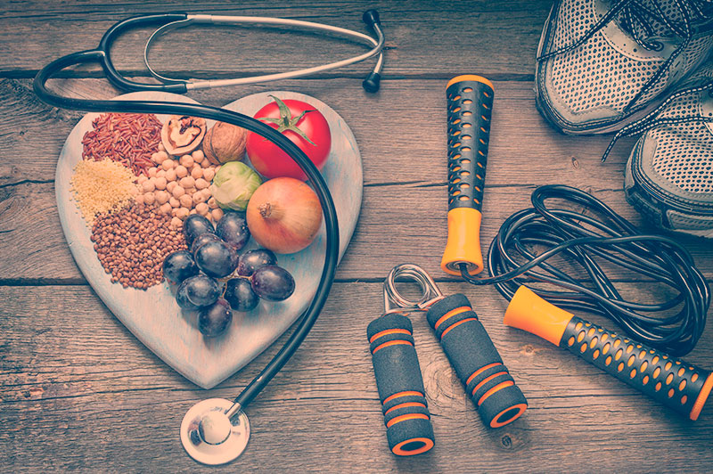

Os esportes são importante para manter uma vida saúdavel, e um caminho ótimo que você deve seguir, pois ira ficar saúdavel e sempre mais forte, ficando forte contra gripes é mantendo uma vida saúdavel. 
Para manter a rotina de exercícios de musculação, que exigem uma carga sobre o corpo, podemos adaptar com garrafas, sacos de arroz, entre outros, use a imaginação! O importante é se concentrar em manter a postura correta nos exercícios e não exagerar na dose;
-Andar por 30 minutos todos os dias; -Fazer exercícios 3 vezes na semana; -Ler 5 páginas por dia; -Meditar por 10 minutos etc. -O que importa é pensar o que faz bem para você. A partir disso, crie uma meta realista e vá aos poucos. Afinal, o mais importante é dar o primeiro passo.
